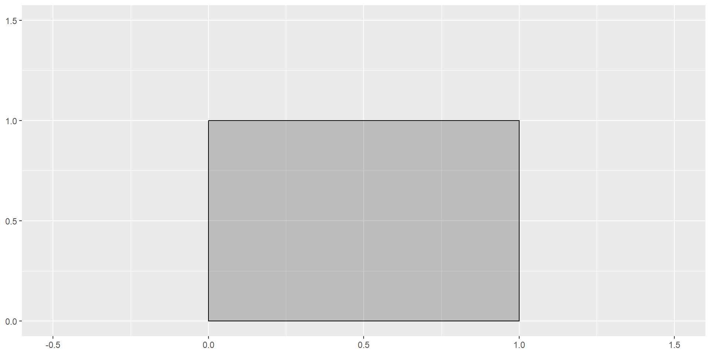
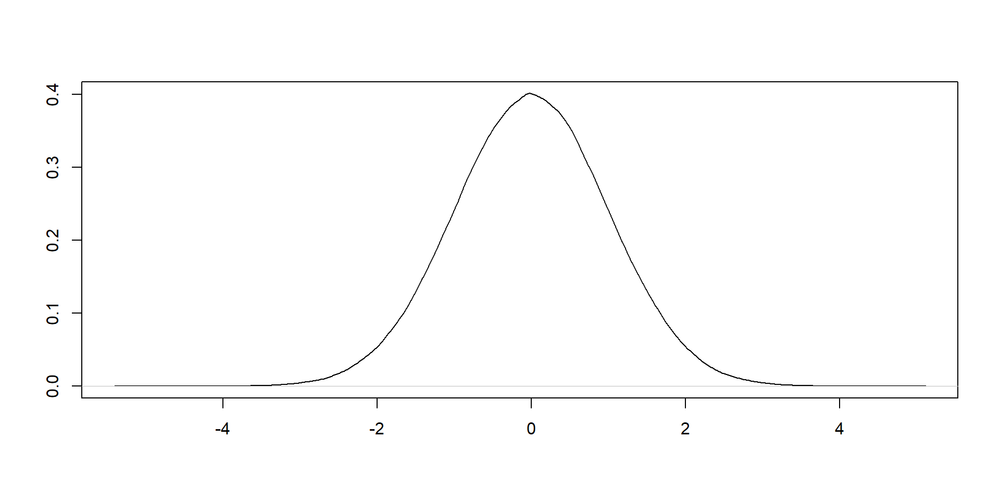
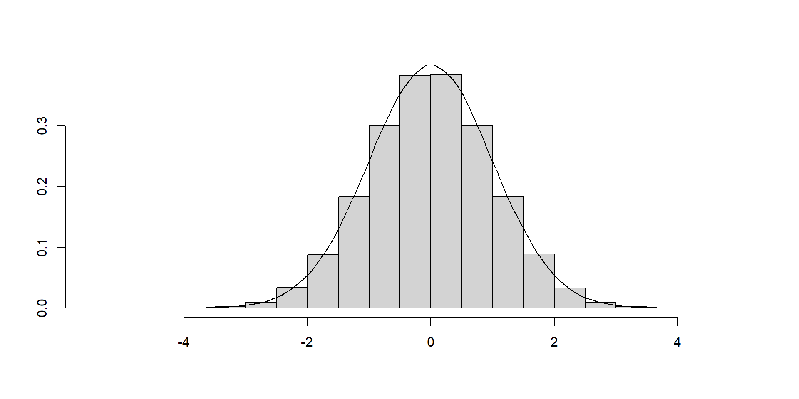
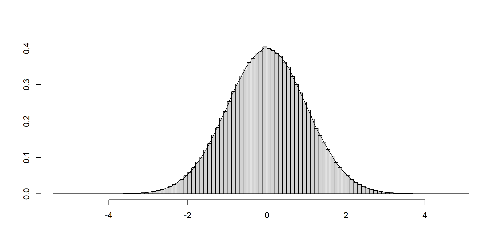
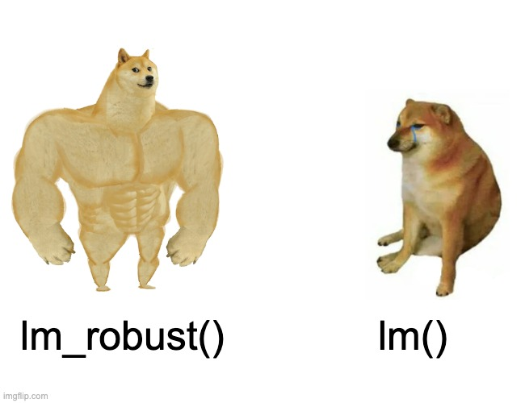

Probability is defined by three rules or assumptions called the Kolmogorov Axioms
Positivity: The probability of any event \(A\) is nonnegative
\[Pr(A) \geq 0 \]
Certainty: The probability that one of the outcomes in the sample space occurs is 1
\[Pr(\Omega) = 1 \]
Additivity: If events \(A\) and \(B\) are mutually exclusive, then:
\[Pr(A \text{ or } B) = Pr(A) + Pr(B)\]
The Addition Rule
For events, \(A\) and \(B\), the addition rule says we can find the probability of either \(A\) or \(B\) occurring:
\[Pr(A \cup B) = Pr(A \text{ or } B) = Pr(A) + Pr(B) - \underbrace{Pr(A \text{ and } B)}_{\text{aka } Pr(A \cap B)}\]
In words: The probability of either A or B occurring is the probability that A occurs plus the probability that B occurs - minus the probability that both occur (so that we’re not double counting…)
For any event two events, \(A\) and \(B\), the probability of \(A\)\((Pr(A))\) can be decomposed into the sum of the probabilities of two mutually exclusive events:
\[Pr(A) = Pr(A \text{ and } B) + Pr(A \text{ and } B^{\complement})\]
The are two broad ways of interpreting what probabilities mean:
Frequentist
Bayesian
Frequentist interpretations of probability
Probability describes how likely it is that some event happens.
Flip a fair coin, the probability of heads is Pr(Heads) = 0.5
Frequentist: view this probability as the limit of the relative frequency of an event over repeated trials.
\[Pr(E) = \lim_{n \to \infty} \frac{n_{E}}{n} \approx \frac{ \text{# of Times E happened}}{\text{Total # of Trials}}\]
Thinking about probability as a relative frequency, requires us to know how to count the number of times an event occurred (see also)
Frequentist interpretations of probability
Probabilities from a Frequentist perspective are defined by fixed and unknownparameters
The goal of statistics for a frequentist is to learn about these parameters from data.
Frequentist statistics often ask questions like “What is the probability of observing some data \(Y\), given a hypothesis about the true value of parameter(s), \(\theta\), that generated it.
Frequentist interpretations of probability
For example, suppose we wanted to test whether a coin is “fair” \((p = Pr(Heads) = .5; q = Pr(Tails) = 1-p = .5).\) We could:
Flip a fair coin 10 times. Our estimate of the \(Pr(H)\) is the number of heads divided by 10. It could be 0.5, but also 0 or 1, or some number in between.
Flip a coin 100 times and our estimate will be closer to the true \(paramter\).
Flip a coin an \(\infty\) amount of times and the relative frequency will converge to the true parameter \((Pr(H) = \lim_{n \to \infty} \frac{n_{H}}{n} = p = 0.5 \text{ for a fair coin})\)
Bayesian interpretations of probability
Frequentist interpretations make sense for describing processes that we could easily repeat (e.g. Coin flips, Surveys, Experiments)
But feel more convoluted when trying to describe events like “the probability of that Biden wins reelection.”
Bayesian interpretations of probability view probabilities as subjective beliefs.
The task for a Bayesian statistics is to update these prior beliefs () based on a model of the likelihood of observing some data to form new beliefs after observing the data (called the posterior beliefs).
Bayesian Updating
Bayesians update their beliefs according to Bayes Rule, which says:
\[\text{posterior} \propto \text{likelihood} \times \text{prior}\] More formally:
Our two main tools for doing statistical inference in this course
Hypothesis Testing
Interval Estimation
Follow largely from frequentist interpretations of probability
Bayesian vs Frequentists
The differences between Bayesian and Frequentist frameworks, are both philosophical and technical in nature
Is probability a relative frequency or subjective belief? How do we form and use prior beliefs
Bayesian statistics relies heavily on algorhithms for Markov Chain Monte-Carlo simulations made possible by advances in computing.
For most of the questions in this course, these two frameworks will yield similar (even identical) conclusions.
Sometimes it’s helpful to think like a Bayesian, others, like a frequentist
Summary: Probability
Probability is a measure of uncertainty telling us how likely an event (or events) is (are) to occur
Probabilities are:
Non-negative
Unitary
Additive
Two different interpretations of probability:
Frequentists: Probability is a long run relative frequency
Bayesians: Probability reflect subjective beliefs which we update upon observing data
Conditional Probability
Conditional Probability: Definition
The conditional probability that event A occurred, given that event B occurred is written as \(Pr(A|B)\) (“The probability of A given B”) and defined as:
\[Pr(A|B) = \frac{Pr(A \cap B)}{Pr(B)} = \frac{\text{Probability of Both A and B}}{\text{Probability of B}}\]
\(Pr(A \cap B)\) is the same as \(Pr(A \text{ and } B)\) is the joint probability of both events occurring
\(Pr(B)\) is the marginal probability of B occuring
Conditional Probability: Multiplication Rule
Joint probabilities are symmetrical. \(Pr(A \cap B) = Pr(B \cap A)\).
By rearranging terms:
\[Pr(A|B) = \frac{Pr(A \cap B)}{Pr(B)}\] We get the multiplication rule:
\[Pr(A \cap B) = Pr(A|B)Pr(B) = Pr(B|A)Pr(A)\]
The Law of Total Probability (Part 2)
We can use multiplication rule to derive an alternative form of the law of total probability:
Conceputally, If \(A\) and \(B\) are independent knowing whether \(B\) occurred, tells us nothing about \(A\), and so the conditional probability of \(A\) given \(B\), \(Pr(A|B)\) is equal to the unconditional, or marginal probability, \(Pr(A)\)
Independence
Formally, two events are statistically independent if and only if the joint probability is equal to product of the marginal probabilities
\[Pr(A\text{ and }B) = Pr(A)Pr(B)\]
Conditional Independence
We can extend the concept of independence to situations with more than two events:
If events \(A\), \(B\), and \(C\) are jointly independent then:
\[Pr(A \cap B \cap C) = Pr(A)Pr(B)Pr(C)\]
Joint independence implies pairwise independence and conditional independence:
\[Pr(A \cap B | C) = Pr(A|C)Pr(B|C)\] But not the reverse.
Bayes Rule
Bayes rule is theorem for how we should update our beliefs about \(A\) given that \(B\) occurred:
\[Pr(A|B) = \frac{Pr(B|A)Pr(A)}{Pr(B)} = \frac{Pr(B|A)Pr(A)}{Pr(B|A)Pr(A)+Pr(B|A^\complement)Pr(A^\complement)}\] Where
\(Pr(A)\) is called the prior probability of A (our initial belief)
\(Pr(A|B)\) is called the posterior probability of A given B (our updated belief after observing B)
What’s the probability you have Covid-19 given a positive test
Now we’re much more confident that we have Covid-19
Random Variables and Probability Distributions
Random Variables
Random variables assign numeric values to each event in an experiment.
Mutually exclusive and exhaustive, together cover the entire sample space.
Discrete random variables take on finite, or countably infinite distinct values.
Continuous variables can take on an uncountably infinite number of values.
Example: Toss Two Coins
\(S={TT,TH,HT,HH}\)
Let \(X\) be the number of heads
\(X(TT)=0\)
\(X(TH)=1\)
\(X(HT)=1\)
\(X(HH)=2\)
Probability Distributions
Broadly probability distributions provide mathematical descriptions of random variables in terms of the probabilities of events.
The can be represented in terms of:
Probability Mass/Density Functions
Discrete variables have probability mass functions (PMF)
Continuous variables have probability density functions (PDF)
Cumulative Density Functions
Discrete: Summation of discrete probabilities
Continuous: Integration over a range of values
Discrete distributions
Probability Mass Function (pmf):\(f(x)=p(X=x)\)
Assigns probabilities to each unique event such that Kolmogorov Axioms (Positivity, Certainty, and Additivity) still apply
Cumulative Distribution Function (cdf)\(F(x_j)=p(X\leq x)=\sum_{i=1}^{j}p(x_i)\)
Sum of the probability mass for events less than or equal to \(x_j\)
Example: Toss Two coins
\(S={TT,TH,HT,HH}\)
Let \(X\) be the number of heads
\(X(TT)=0\)
\(X(TH)=1\)
\(X(HT)=1\)
\(X(HH)=2\)
\(f(X=0)=p(X=0)=1/4\)
\(f(X=1)=p(X=1)=1/2\)
\(F(X\leq 1) = p(X \leq 1)= 3/4\)
Rolling a die
Each side has equal probability of occurring (1/6). The probability that you roll a 2 or less P(X<=2) = 1/6 + 1/6 = 1/3
Continuous distributions
Probability Density Functions (PDF):\(f(x)\)
Assigns probabilities to events in the sample space such that Kolmogorov Axioms still apply
But… since their are an infinite number of values a continuous variable could take, p(X=x)=0, that is, the probability that X takes any one specific value is 0.
Cumulative Distribution Function (CDF)\(F(x)=p(X\leq x)=\int_{-\infty}^{x}f(x)dx\)
Instead of summing up to a specific value (discrete) we integrate over all possible values up to \(x\)
Probability of having a value less than x
Integrals
What’s the area of the rectangle?
\(base\times height\)

Integrals
How would we find the area under a curve?

Integrals
Well suppose we added up the areas of a bunch of rectangles roughly whose height’s approximated the height of the curve?

Can we do any better?
Integrals
Let’s make the rectangles smaller

What happens as the width of rectangles get even smaller, approaches 0? Our approximation get’s even better
\(E[XY]=E[X]E[Y]\) if \(X\) and \(Y\) are independent
How many times would you have to roll a fair die to get all six sides?
We can think of this as the sum of the expected values for a series of geometric distributions with varying probabilities of success, \(p\). The expected value of a geometric variable is:
For this question, we need to calculate the probability of success, p, after getting a side we need.
The probability of getting a side you need on your first role is 1. The probability of getting a side you need on the second role, is 5/6 and so the expected number of roles is 6/5, and so the expected number of rolls to get all six is:
ev <-c()for(i in6:1){ ev[i] <-6/i}# Expected rolls for each 1 through 6th siderev(ev)
[1] 1.0 1.2 1.5 2.0 3.0 6.0
# Total sum(ev)
[1] 14.7
Variance
If \(X\) has a finite mean \(E[X]=\mu\), then \(E[(X-\mu)^2]\) is finite and called the variance of \(X\) which we write as \(\sigma^2\) or \(Var[X]\).
The standard error for the \(k\)th coefficient \(\beta_k\) is simply the square root of the of the \(k\)th diagonal element of the variance-covariance matrix
\[
\text{SE}(\beta_k) = \sqrt{Var(\beta_k)}
\]
Robust Standard Errors
\(\sigma^2(X'X)^{-1}\) is a good estimate of the variance of \(\hat{\beta}\) if the errors in a regression are independent and identically distributed (iid).
These turn out to be strong assumptions that are violated when there is:
The variance among the treated units tends to be higher than the variance among control units
Autocorrelation
We observe the same unit over multiple periods (Say RI in 2016, 2018, 2020)
Clustering
Respondents in RI are more similar to each other than respondents in MA
Robust Standard Errors
Robust standard errors are ways of calculating standard errors for regressions when we think the assumption of IID errors is unrealistic
The assumption of IID is almost always unrealistic…
We call these of estimators robust because they provide consistent estimates of the SE even when errors are not independent and identically distributed.
Robust standard errors in R

lm_robust()
In this weeks lab we will get practice using the lm_robust() function from the estimatr.
As you will see, lm_robust() provides a convenient way to:
calculate a variety of robust standard errors using the se_type = "stata" argument for example to get the SEs Stata uses
include fixed effects using fixed_effects = ~ st + year argument
cluster standard errors by some grouping id variable cluster=st
Previewing Lab 8
Overview
The goals of this weeks lab are to:
Help develop your intuition behind the Two-way Fixed Effects Estimator
Learn how to estimate models with fixed effects and robust clustered standard errors using lm_robust()
Interpret the marginal effects of interaction models
As you can see, there is considerable variation in average turnout across States
Q3.2 will ask you to describe similar variation across years.
Q3.3 will then ask you to look at variation across SDR policy within a single state.
The goal these questions is to help illustrate motivation for including fixed effects as way of generalizing the logic of a difference in differences design
Generalizing Diff-in-Diff with Linear Regression with Fixed Effects
Linear regression allows us to generalizes Diff-in-Diff to multiple periods and treatment interventions, with fixed effects
Unit fixed effects\((\alpha_i)\)control for time-invariant differences across units
Period fixed effects\((\gamma_i)\) control for unit-invariant differences across periods
\(\tau\) corresponds the Difference-in-Difference estimate for a two-way fixed effects regression
Grumbach, Jacob M, and Charlotte Hill. 2022. “Rock the Registration: Same Day Registration Increases Turnout of Young Voters.”The Journal of Politics 84 (1): 405–17.